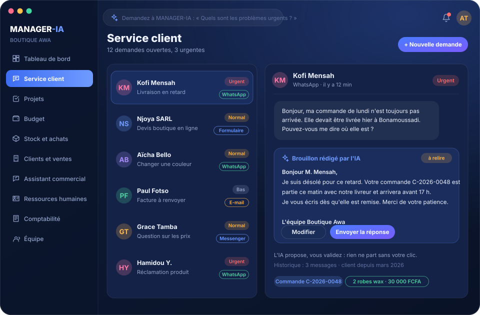

Sous-application 1
Service client
Toutes les demandes de vos clients arrivent au même endroit : par un formulaire à partager, ou saisies à la main depuis WhatsApp, e-mail ou téléphone. Vous suivez chaque demande jusqu'à sa résolution.
- Tri par statut et priorité, assignation à un collègue
- Brouillon de réponse rédigé par l'IA, prêt à envoyer
- Historique complet de chaque échange